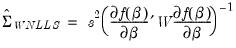

|
|
|
with respect to the parameters do not depend upon
; if the derivatives are functions of
, we say that the model is nonlinear in parameters.
. While there is no closed form solution for the parameters, estimates my be obtained from iterative methods as described in “Optimization Algorithms”.


and employ a White or HAC sandwich estimator for the coefficient covariance as in “Robust Standard Errors”. In this case,
is estimated using the OPG or Hessian, and the
is a robust estimate of the variance of the gradient weighted residuals. In this case,
is a scalar representing the degree-of-freedom correction, if employed.
It is easy to tell EViews that you wish to estimate the parameters of a model using nonlinear least squares. EViews automatically applies nonlinear least squares to any regression equation that is nonlinear in its coefficients. Simply select Object/New Object.../Equation, enter the equation in the equation specification dialog box, and click OK. EViews will do all of the work of estimating your model using an iterative algorithm.A full technical discussion of iterative estimation procedures is provided in Appendix C. “Estimation and Solution Options”.To create a new coefficient vector, select Object/New Object.../Matrix-Vector-Coef in the main menu and provide a name. You may now use this coefficient vector in your specification. For example, if you create a coefficient vector named CF, you can rewrite the specification above as:

 is a general function of the explanatory variables
is a general function of the explanatory variables  and the parameters
and the parameters  . Least squares estimation chooses the parameter values that minimize the sum of squared residuals:
. Least squares estimation chooses the parameter values that minimize the sum of squared residuals: . There is no way to rearrange the terms in this model so that ordinary least squares can be used to minimize the sum-of-squared residuals. We must use nonlinear least squares techniques to estimate the parameters of the model.
. There is no way to rearrange the terms in this model so that ordinary least squares can be used to minimize the sum-of-squared residuals. We must use nonlinear least squares techniques to estimate the parameters of the model.  is an estimate of the information,
is an estimate of the information,  is the variance of the residual weighted gradients, and
is the variance of the residual weighted gradients, and  is a scale parameter.
is a scale parameter. . Then we have
. Then we have is an estimator of the residual variance (with or without degree-of-freedom correction).
is an estimator of the residual variance (with or without degree-of-freedom correction). using the outer-product of the gradients (OPG) so we have
using the outer-product of the gradients (OPG) so we have .
. to the one-half of the Hessian matrix of second derivatives of the sum-of-squares function:
to the one-half of the Hessian matrix of second derivatives of the sum-of-squares function: , and EViews will minimize:
, and EViews will minimize: , where
, where  are the values of the weight series and
are the values of the weight series and  is the diagonal matrix of weights. The first-order conditions are given by,
is the diagonal matrix of weights. The first-order conditions are given by,